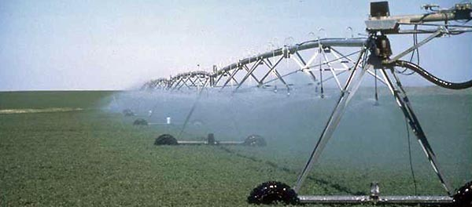
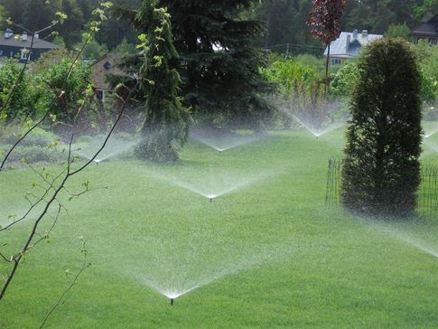

Регулярный полив необходим не только грядкам, но и деревьям, кустарникам и газонам. Для владельцев больших участков с просторным садом и ландшафтным дизайном не всегда удобно производить полив вручную. Кроме того, разным растениям требуется разное количество влаги. Оптимальным вариантом будет установка на участке оросительной системы.
Современные типы систем орошения
В зависимости от условий на вашем участке, вы можете выбрать один из трех типов оросительной системы.
- Дождевальное орошение.
Вода к растениям подается по закрытым трубопроводам, а сам процесс полива напоминает искусственный дождь (отсюда и название системы). Эта схема не требует больших затрат на установку, к тому же позволяет производить полив, не нарушая структуру почвы. - Внутрипочвенное орошение.
Вода подается по трубам с небольшими отверстиями, проложенными в грунте. Под трубами укладывается слой полиэтилена или другой влагоизоляции, чтобы предотвратить подтекание воды. - Капельный полив.
В этом случае трубопроводы могут быть наземными и подземными. Влага по трубам подается непосредственно к корням растений, не затрагивая листьев и стеблей. Этот способ позволяет также локально удобрять посадки на участке.
Тонкости эксплуатации оросительных систем
Выбирая тип системы орошения, учтите количество энергии, которое ей необходимо для работы. Также нужно рассчитать давление воды в вашем водопроводе. Современному оборудованию требуется около 2,5 атмосфер. Если водопроводная сеть на вашем участке не сможет справиться с такой нагрузкой, возможно, потребуется дополнительное оборудование.
Если участок достаточно крупный, его одновременное орошение потребует большого количества воды, что опять же, приведет к значительной нагрузке на водопровод. Разумнее будет разделить территорию участка на зоны и запускать оросительную систему поэтапно. Учтите также температуру воды для полива. Если она поступает из скважины, то может оказаться слишком холодной для растений. В этом случае нужно предусмотреть емкость для нагрева.
Составление проекта систем орошения
Как видите, перед установкой оросительной системы необходимо продумать очень много деталей. Лучше всего доверить разработку схемы полива ландшафтным дизайнерам. Они составят эффективный проект, который будет учитывать:
- Рельеф участка.
- Площади полива.
- Зоны, которые должны оставаться сухими.
- Планировку участка.
- Схему работы системы.
Составление грамотного проекта – залог успешной работы системы орошения, удобной всем обитателям вашего участка.